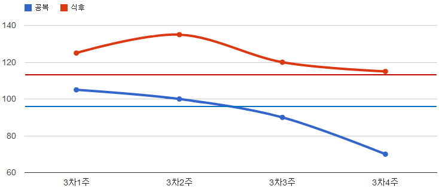
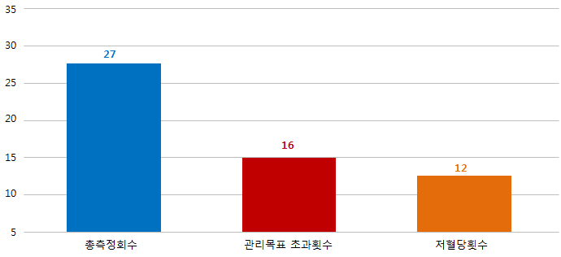

홍길동님의 혈당측정에 대한 제 3차 종합리포트입니다.
측정기준기간: 2012.04.04 ~ 2012.05.02
리포트 생성일: 2012.05.03


리포트

안녕하세요. 홍길동님~
2012년 2월 회원님의 혈당측정치에 대한 월별 리포트입니다.
회원님께서 2월 총 측정한 혈당은 공복혈당 21회, 식후2시간혈당 27회로 비교적 꾸준히 측정을 하셨습니다. 혈당 측정은 번거롭더라도 당뇨 환자에게는 꼭 필요한 습관으로 지금 처럼 계속 꾸준히 측정하고 관리하시길 바랍니다.
공복혈당은 평균 104mg/dL로 통상적인 당뇨환자 대비 적정한 수준으로 유지되고 있으나, 식후혈당이 평균 149 mg/dL로 다소 높은 편입니다. 이와 같이 공복혈당 대비 식후혈당이 높은 경우는 대부분 식습관에 원인이 있습니다. 지난 한 달 동안 섭취하신 식사량 및 음식종류를 분석해보시고, 반드시 짜거나 매운 음식은 피하셔야 합니다. 우리나라의 음식은 그 특성상 대부분 염장음식(소금에 절인 후 조히)이므로, 염도를 충분히 검토하여 섭취하시고, 섭취 후 운동을 가볍게 꾸준히 하시면 많은 도움이 됩니다.
감사합니다.

인쇄하기


닫기

인쇄하기
닫기

측정혈당 평균

• 공복혈당
• 식후혈당

평균 111 mg/dL (목표 80~120 mg/dL), 측정횟수: 13회
평균 154 mg/dL (목표 120 ~145 mg/dL), 측정횟수: 19회

저혈당/목표미달 횟수


공복혈당 목표

식후혈당목표
